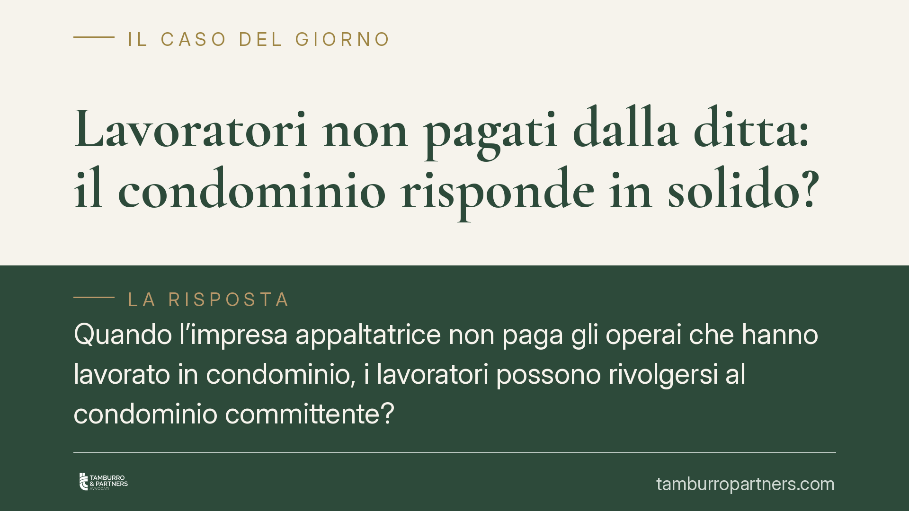

Lavoratori non pagati dalla ditta: il condominio risponde in solido?
Quando l'impresa appaltatrice non paga gli operai che hanno lavorato in condominio, i lavoratori possono rivolgersi al condominio committente? La Corte di Cassazione tende a escludere la responsabilità solidale ex art. 29 D.lgs. 276/2003, lasciando ai dipendenti lo strumento più limitato dell'azione diretta prevista dall'art. 1676 c.c. Un orientamento che incide su amministratori, condòmini e lavoratori.

Il caso
Un'impresa edile esegue lavori appaltati da un condominio. L'appalto si conclude, ma la ditta non versa stipendi e contributi ai propri operai. I lavoratori, rimasti senza retribuzione, cercano un soggetto solvibile e guardano al condominio committente.
La domanda è netta: il condominio deve pagare i debiti di lavoro della ditta che ha incaricato? La risposta che emerge dalla giurisprudenza di legittimità è, in via tendenziale, negativa.
Inquadramento normativo
Lo strumento classico a tutela dei lavoratori negli appalti è l'art. 29 del D.lgs. 276/2003. La norma prevede, in generale, la responsabilità solidale tra committente, appaltatore ed eventuali subappaltatori per i trattamenti retributivi e i contributi previdenziali dovuti ai lavoratori impiegati nell'appalto.
Esiste però un'eccezione testuale. Il comma 3-ter dell'art. 29 esclude tale regime quando il committente è una persona fisica che non esercita attività d'impresa o professionale: in sostanza, il privato che commissiona un lavoro per finalità estranee all'attività economica non risponde in solido.
Il punto delicato è che il condominio non è una persona fisica: è un ente di gestione privo di personalità giuridica. L'applicabilità dell'esclusione, quindi, non discende dalla lettera della norma. La Corte di Cassazione (ord. n. 19514/2023) ha tuttavia valorizzato la *ratio* della disposizione: l'esenzione protegge chi si colloca in una posizione assimilabile a quella del consumatore, cioè chi commissiona opere per soddisfare esigenze proprie e non nell'ambito di un'attività economica organizzata. In questa prospettiva interpretativa, il condominio che affida lavori di manutenzione ordinaria o straordinaria agisce per il godimento dei beni comuni, non per fini imprenditoriali.
Si tratta, va detto con chiarezza, di un'interpretazione estensiva della ratio dell'esclusione, non di un dato normativo testuale: il condominio viene avvicinato alla figura del committente-consumatore in ragione della finalità dell'incarico, non perché sia qualificabile come persona fisica. L'argomentazione va dunque seguita con prudenza e verificata caso per caso.
> Nota: alcune pronunce più recenti risultano in fase di pubblicazione e vanno lette con cautela finché non consolidate. L'orientamento di riferimento resta allo stato quello espresso dall'ord. n. 19514/2023.
L'alternativa per i lavoratori: l'art. 1676 c.c.
Esclusa la solidarietà dell'art. 29, ai lavoratori non resta però la mano vuota. Opera l'art. 1676 c.c., che consente agli ausiliari dell'appaltatore (operai e dipendenti) di agire direttamente contro il committente per ottenere quanto a loro dovuto.
Questo strumento ha però un limite preciso e rilevante: l'azione è ammessa soltanto fino alla concorrenza del debito che il committente ha, a sua volta, verso l'appaltatore al momento della domanda. In pratica, se il condominio ha già saldato integralmente la ditta, i lavoratori non hanno nulla da pretendere; se residua un credito dell'impresa verso il condominio, i dipendenti possono soddisfarsi entro quel limite.
Implicazioni pratiche
Per gli amministratori di condominio, la pronuncia riduce il rischio di dover pagare due volte, ma rende cruciale la gestione tempistica dei pagamenti alla ditta.
Per i lavoratori, la tutela si restringe: l'azione diretta è efficace solo se il committente non ha ancora pagato l'appaltatore. Tempestività e prova del credito residuo diventano decisive.
Per i condòmini, significa minore esposizione patrimoniale, ma resta fondamentale che l'amministratore documenti con precisione i pagamenti.
Cosa fare in concreto
- Amministratori: conservate la documentazione completa dei pagamenti alla ditta (contratto, SAL, quietanze), così da provare l'eventuale estinzione del debito verso l'appaltatore.
- Amministratori: prima di saldare l'ultima tranche, valutate la richiesta del DURC e di evidenza del regolare pagamento degli operai.
- Lavoratori: attivate senza ritardo l'azione diretta ex art. 1676 c.c., prima che il committente saldi l'impresa, documentando il credito maturato.
- Lavoratori: acquisite ogni prova del lavoro svolto nell'appalto (buste paga, ordini di servizio, testimonianze).
- Condòmini: sollecitate l'amministratore a inserire nei capitolati clausole che subordinino i pagamenti alla regolarità retributiva e contributiva della ditta.
Disclaimer
Contributo informativo a cura di Tamburro & Partners - Avv. Giuseppe Tamburro. Non costituisce parere legale.
Ogni condominio ha una storia a sé.
Se gestisci un'amministrazione e vuoi un confronto su una specifica questione condominiale, scrivi allo studio. Ti rispondiamo entro un giorno lavorativo.